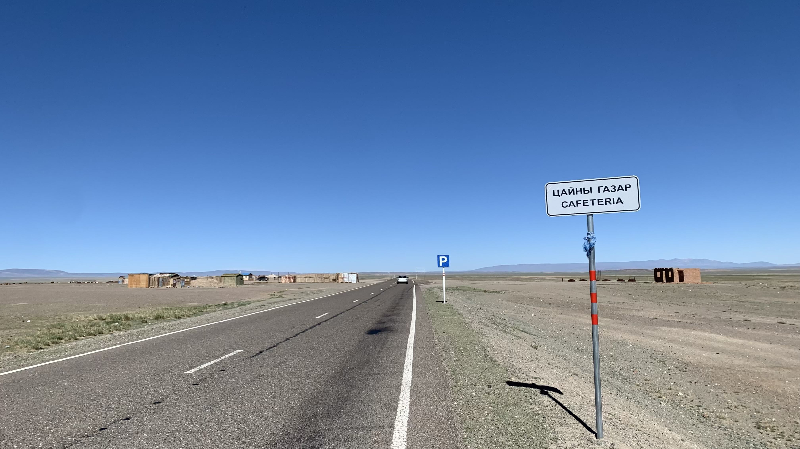
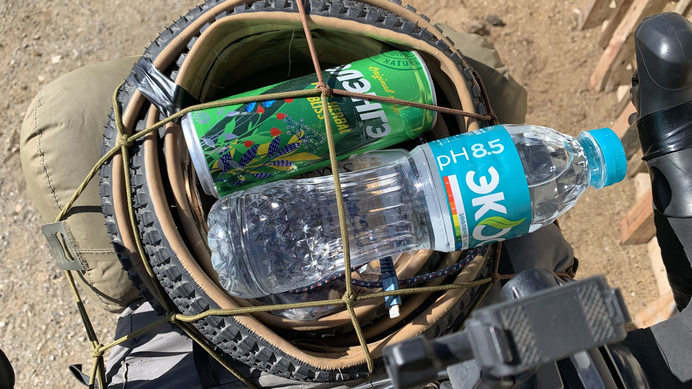
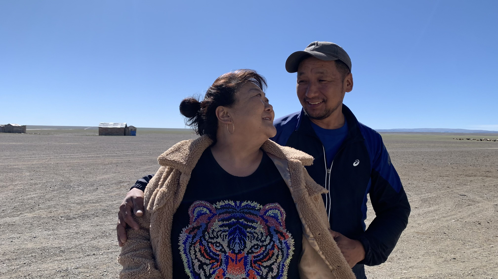
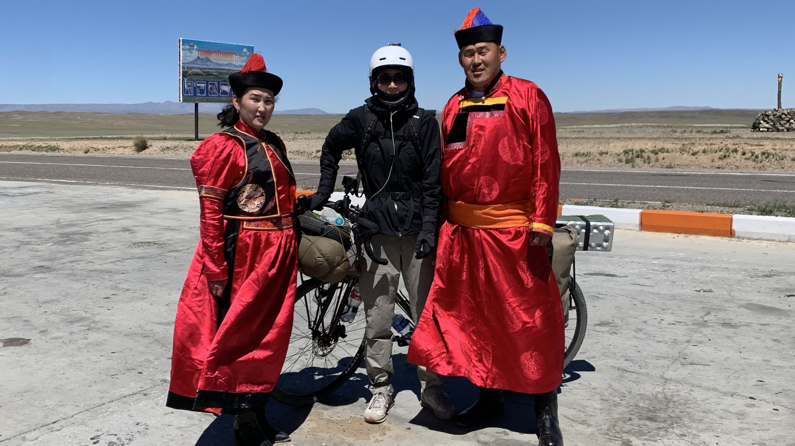
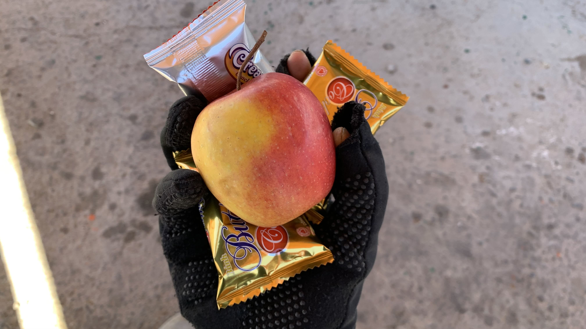
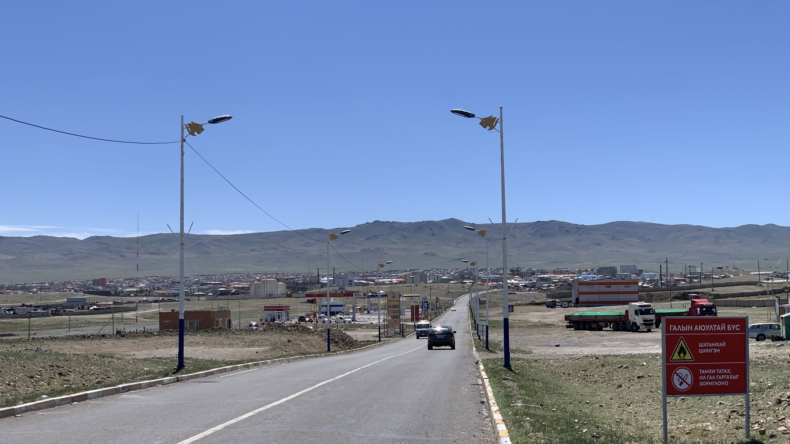
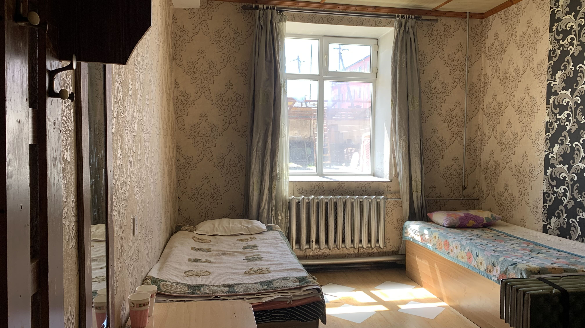

k-Day 107｜阿爾泰
距離簽證到期只剩14天。
今天必須、務必抵達阿爾泰。雖然這麼想，身體卻不想離開睡袋。咖啡包已經喝完了，沒有額外動力起身。

水快喝光了，路旁出現地圖上沒出現的蒙古包。進門後發現老闆正在煮羊肉湯，有位客人坐在床上吃肉。
買了一瓶水和桃子汽水，客人問了我從哪裡騎過來。聽我說完他呵呵笑著，老闆拿了一塊酸羊奶塊給我。

出門裝水時客人從蒙古包快步走來，又拿了一瓶礦泉水和草本汽水給我，同時跟周圍的人說我從日本出發，經過韓國和中國騎過來的。

我問可否拍個照呢？客人叫來旁邊的一名女子，兩人迅速擺出專業婚紗照會出現的姿勢。不知道發生了什麼，先祝兩位永浴愛河。

往阿爾泰的路線是微微的上坡，前幾天在腦中進行意象訓練的爬坡姿勢派上用場，一路上頂著風也是踩得順暢。
在城外的草原遇到拍婚紗照的家庭，貌似長輩的男性叫來兩位新人，要他們站在我旁邊拍照。拍完後我說：「我的手機也要拍一張。」兩位新人笑說：「我們的照片要留到外國了。」
.
拍完照後車上的小朋友拿了一顆蘋果給我，說了謝謝後坐進涼亭休息。小朋友又抓了一把餅乾給我。

山路彎曲越來越明顯，就要進城了。

路邊一輛車停下來，看來相當開心的男子遞了一瓶能量飲。

終於看到阿爾泰的路牌了。

進城後問了幾間酒店，沒有十萬以內的價格，打開離線地圖找到前人標記的便宜酒店。一個晚上六萬元。

水壓充足，房內也相當乾淨。先前買的30天網路已經到期，這次改從網上購買esim。洗好衣物，採買接下來路上的補給品後就早早睡覺吧。
接下來才是挑戰。
今日花費： 水＋汽水5000、住宿 60000、eSIM 548（台幣）、衛生紙+咖啡5+泡麵4+葡萄乾堅果+水5L+蘿蔔汁 41300元